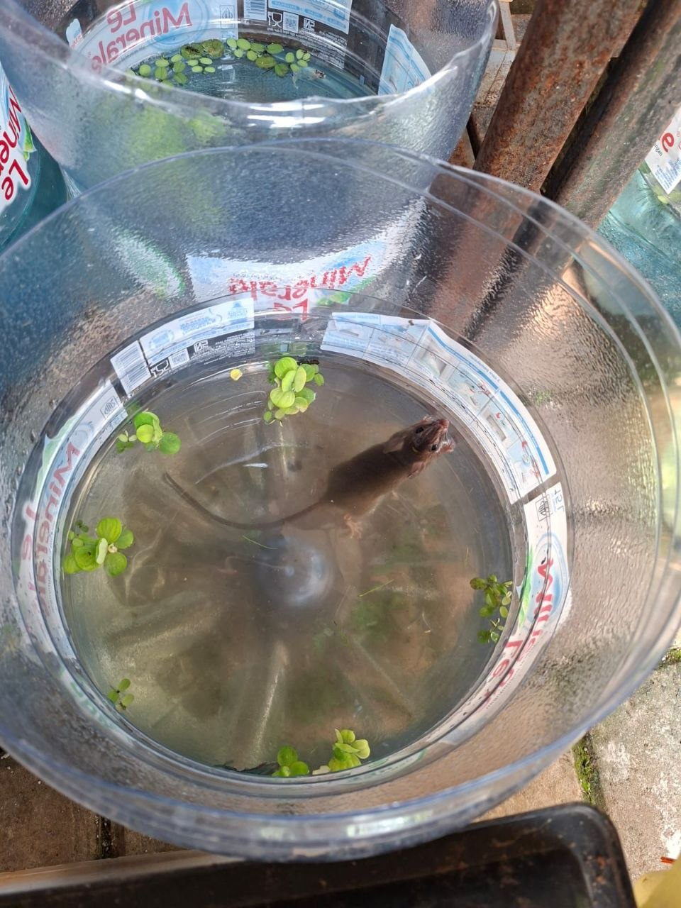
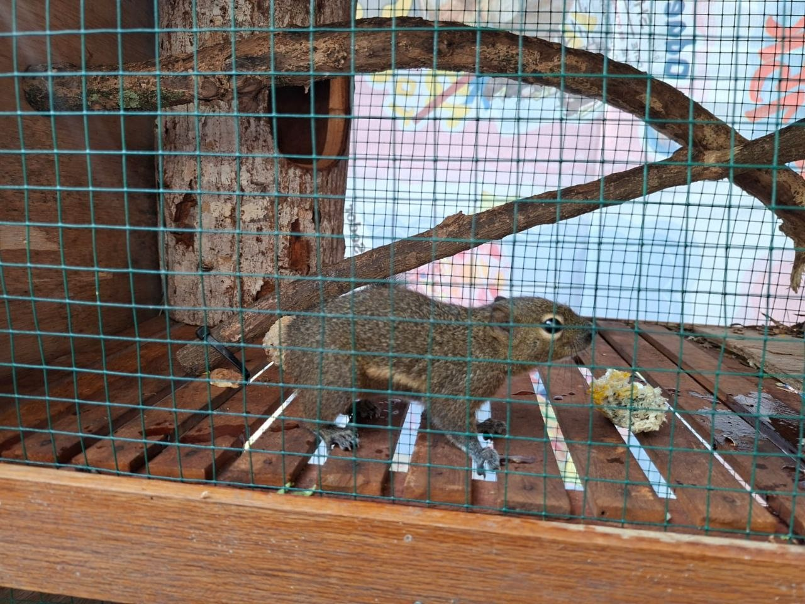
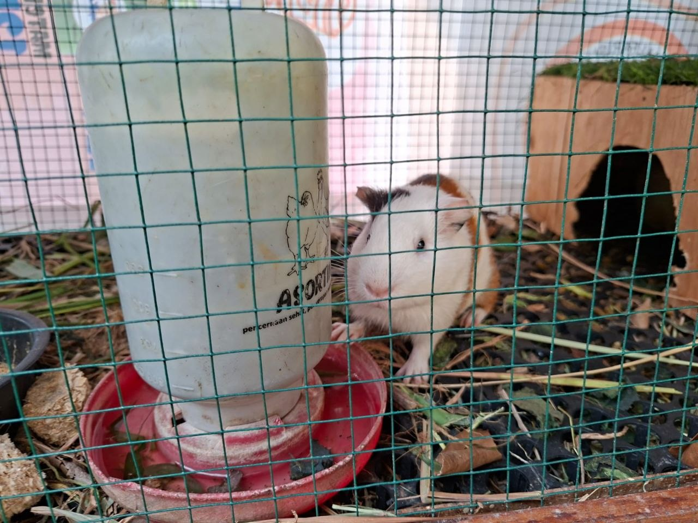

Mengenal dan merawat hewan di lingkungan sekolah.
Explore AnimalGreen House sekolah merupakan tempat pembelajaran untuk mengenal, merawat, dan menjaga berbagai jenis hewan di lingkungan sekolah.

Mamalia kecil dari famili Soricidae yang seringkali disangka sebagai tikus karena kemiripan bentuk tubuhnya.
Go somewhere
adalah mamalia kecil dari ordo Scandentia yang sering kali salah dikenali sebagai bajing.
Go somewhere